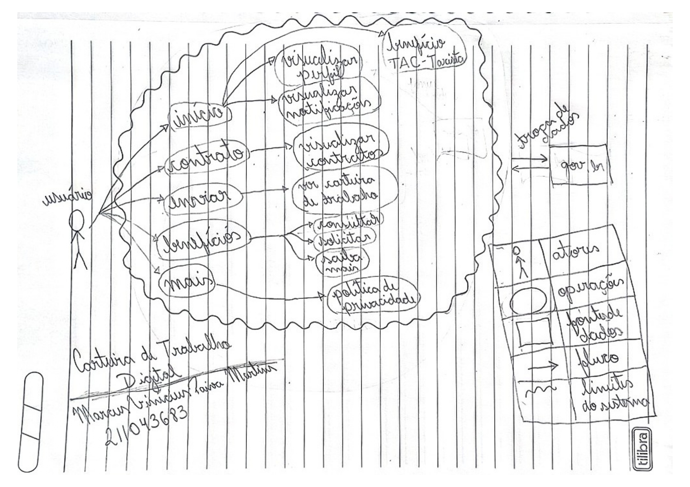

Aplicativos analisados
Introdução
Em uma atividade inicial passada pelo professor André Barros, cada integrante da equipe desenvolveu a modelagem de um Rich Picture para que pudessem ser feitas as análises de cada aplicativo escolhido para cada membro, e decidir qual seria desenvolvido pelo grupo. Essa área irá mostrar o que foi realizado por cada integrante.
Rich Pictures desenvolvidos pela equipe
1. Sinesp Cidadão
O Sinesp Cidadão é um aplicativo desenvolvido para o Sistema Nacional de Informações de Segurança Pública (Sinesp), permitindo aos brasileiros o acesso a serviços da Secretaria Nacional de Segurança Pública.

2. Carteira Digital de Trânsito
O "Carteira Digital de Trânsito" é um aplicativo que permite o usuário acessar a sua habilitação digitalmente, além de verificar infrações, veículos em seu nome e tirar dúvidas:

3. FGTS
O aplicativo do FGTS permite aos trabalhadores consultar o saldo total das contas, depósitos realizados pelo empregador, impressão de extratos entre várias outras funções.

4. Receita Federal
O aplicativo da Receita Federal, o qual é vinculado com a conta do site 'gov.br', oferece um status geral do CPF em vários sistemas da Receita Federal.

5. Carteira de Trabalho Digital
A "Carteira de Trabalho Digital" tem como objetivo trazer facilidades ao trabalhador caso queira acessar dados sobre sua vida trabalhista, contratos e dados pessoais.

6. UnB Hub
O "UnB HUB" é um aplicativo que permite encontrar uma série de informações sobre atividades que ocorrem dentro da UnB, facilitando o acesso dessas informações pelos estudantes.

Histórico de Versões
| Data | Versão | Descrição | Autor(es) | Revisor(es) |
|---|---|---|---|---|
| 08/11/2022 | 0.1 | Criação da página | Luíza | Marcus |
| 10/11/2022 | 0.2 | Correções gramaticais e de concordância | Luíza e Lucas Felipe | Marcus e Iago |